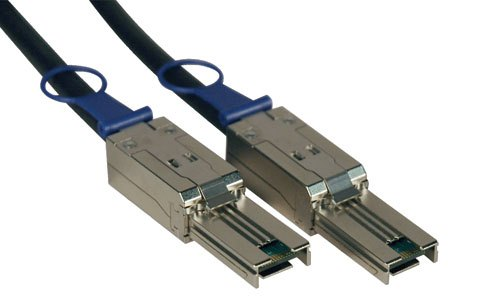

ATA – параллельный интерфейс для подключения жестких дисков и других устройств. В спецификации АТА фигурируют следующие компоненты:
| Версия | Скорость передачи данных, Мбайт/c | Типы разъемов |
| ATA1 | 8,33 | 40/44-контактный разъем и кабель |
| ATA2 | 16,67 | 40/44-контактный разъем и кабель |
| ATA3 | 16,67 | 40/44-контактный разъем и кабель |
| ATA4 | 33,33 | 40/44-контактный разъем и кабель |
| ATA5 | 66,66 | 80 – жильный 40-контактный кабель, обладающий повышенной помехозащищенностью |
| ATA6 | 100 | 80 – жильный 40-контактный кабель, обладающий повышенной помехозащищенностью |
| ATA7 | 133 | 80 – жильный 40-контактный кабель, обладающий повышенной помехозащищенностью |
Достоинства:
Недостатки:
Подключение жесткого диска:
SATA - последовательный интерфейс для подключения накопителей данных. Пришел на смену ATA в начале 2000-х годов. В настоящее время является наиболее распространенным интерфейсом для подключения жестких дисков.
| Версия | Скорость передачи данных, Мбайт/c | Типы разъемов |
| SATA Revision 1.x | 1200 | 7-контактный разъем для подключения шины данных и 15-контактный (4-контактный Molex) для подключения питания. |
| SATA Revision 2.x | 2400 | 7-контактный разъем для подключения шины данных и 15-контактный (4-контактный Molex) для подключения питания. |
| SATA Revision 3.x | 4800 | 7-контактный разъем для подключения шины данных и 15-контактный (4-контактный Molex) для подключения питания. |
| eSATA | 2400 | 7-контактный разъем для подключения шины данных и 15-контактный (4-контактный Molex) для подключения питания. |
Достоинства:
Подключение жесткого диска:
SCSI - параллельный интерфейс для подключения различных устройств (от жестких дисков и оптических приводов до сканеров и принтеров).
| Версия | Скорость передачи данных, Мбайт/c | Типы разъемов |
| SCSI1 | 5 | 50-контактный, 25-контактный кабель. |
| SCSI2 | 10-20 | Разъемы для SCSI1 + 50-контактный MiniD50 «HPDB50» |
| SCSI3 | 20-40 | 7-контактный разъем для подключения шины данных и 15-контактный (4-контактный Molex) для подключения питания. |
| Ultra-2 SCSI | 80 | 68-контактный, 68-контактный MiniD68«HPDB68», 68-контактный HPCN68 «Ultra micro DB68» |
| Ultra-3 SCSI | 160 | 68-контактный, 68-контактный MiniD68«HPDB68», 68-контактный HPCN68 «Ultra micro DB68» |
| Ultra-320 SCSI | 320 | 68-контактный, 68-контактный MiniD68«HPDB68», 68-контактный HPCN68 «Ultra micro DB68» |
| Ultra-640 SCSI | 640 | 68-контактный, 68-контактный MiniD68«HPDB68», 68-контактный HPCN68 «Ultra micro DB68» |
Достоинства:
Недостатки:
Интерфейс SCSI преимущественно используется для рабочих станций, серверов.
SAS (Serial Attached SCSI) - последовательный интерфейс, пришедший на смену SCSI.
Достоинства:
Недостатки:
Также как и SCSI, преимущественно используется для рабочих станций, серверов.
{kind=link}
{kind=link}
{kind=link}
{kind=link}
{kind=link}